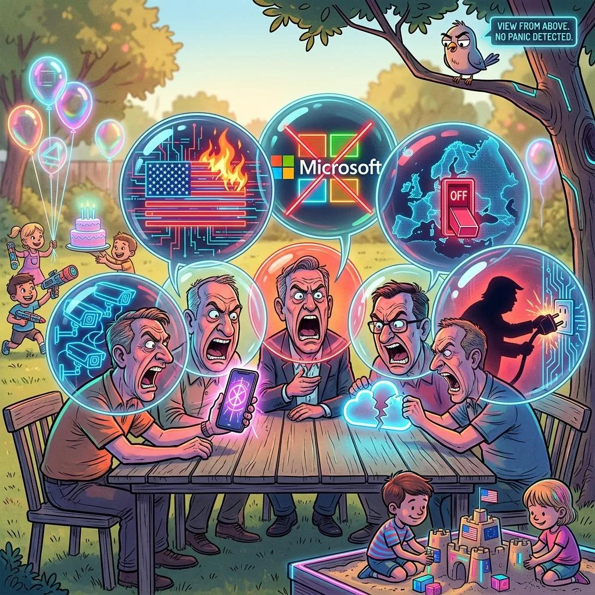

Digital Sovereignty: Why Europe Lost the Cloud Race — And Why That's Okay
A birthday party debate about US cloud dependency turns into a reality check: fear is not a strategy, autarky is an illusion, and Europe's real chance lies in asymmetric investment.
Read More →